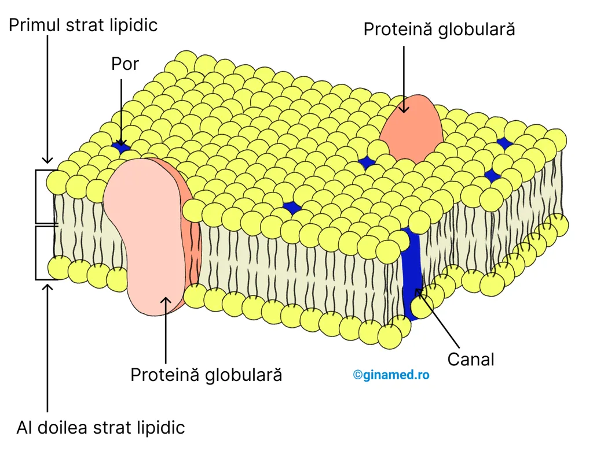
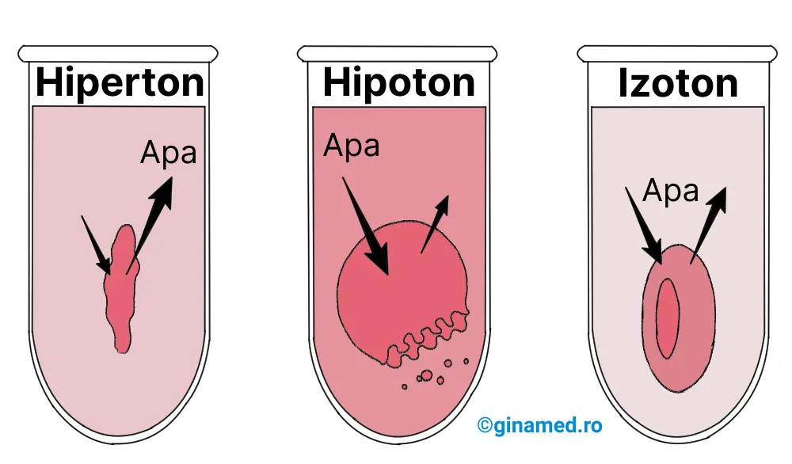
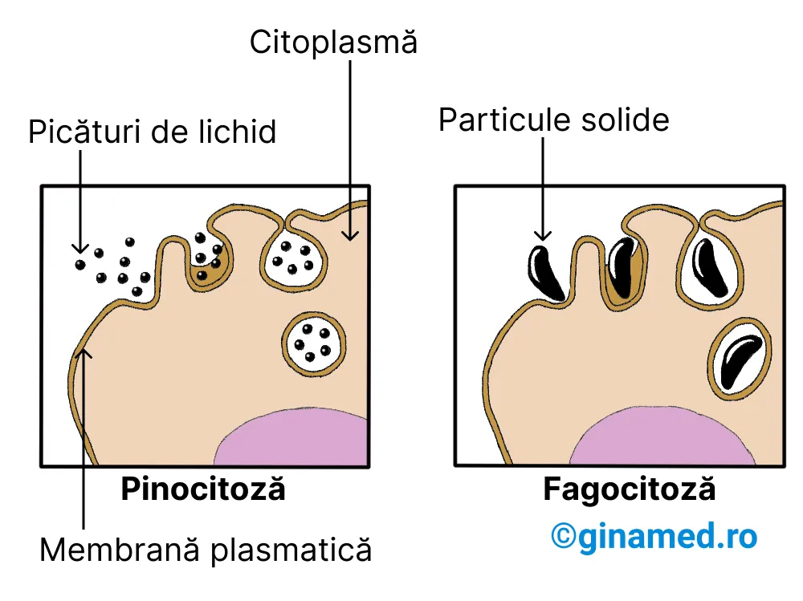
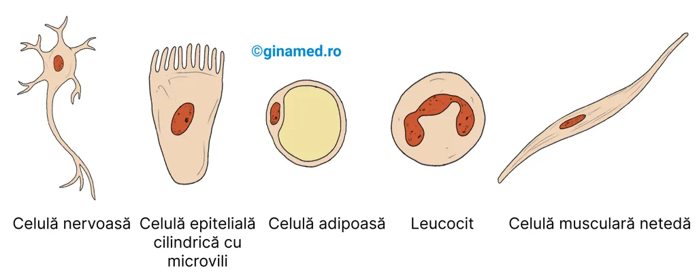
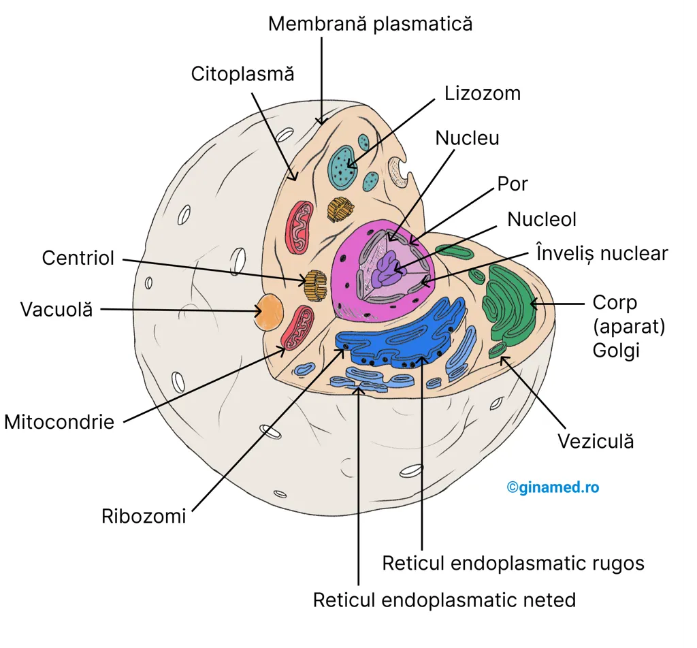

Capitolul 3 - Celula și fiziologia celulară
Celula este unitatea de bază a organismului uman. Lecția urmărește ordinea manualului: introducere, structura celulei, membrana plasmatică, mișcările moleculare, nucleul, citoplasma și organitele, apoi energia celulară.
Harta capitolului
Procariote, eucariote și componentele comune ale celulei.
3.2 Structura celuleiCitoplasma și membrana celulară sunt componentele de bază.
Membrana plasmaticăFosfolipide, colesterol, proteine, glicolipide și glicoproteine.
Mișcările moleculareDifuziune, osmoză, difuziune facilitată, transport activ, endocitoză și exocitoză.
NucleulADN, histone, cromozomi, înveliș nuclear, nucleoli și cromatină.
Citoplasma și organiteleRE, ribozomi, aparat Golgi, lizozomi, mitocondrii, citoschelet, cili și flageli.
Celulele și energiaOrganizarea celulară, energia de activare și reacțiile exergonice/endergonice.
Ideea centrală
Celula umană este delimitată de membrana plasmatică, conține citoplasmă și organite, are nucleu în majoritatea celulelor umane și comunică cu mediul extern prin mecanisme de transport membranar.
3.1. Introducere
Teoria celulară afirmă că organismele vii sunt alcătuite din celule, iar biologia corpului uman gravitează în jurul biologiei celulare.
1Teoria celulară
Similar tuturor organismelor vii, corpul uman este alcătuit din celule. Acest concept, cunoscut drept teoria celulară, este un principiu de bază al biologiei.
Biologia corpului uman gravitează în jurul biologiei celulare.
Un criteriu important de clasificare a organismelor vii îl reprezintă celula, care le împarte în două grupuri majore: eucariote și procariote.
3.2. Structura celulei
Toate celulele au două componente de bază: citoplasma și membrana celulară, numită și membrană plasmatică.
1Componente de bază
Cele două componente de bază din alcătuirea tuturor celulelor sunt: citoplasma și membrana celulară, numită și membrană plasmatică.
Membrana plasmatică
Membrana delimitează celula, îi menține forma și asigură schimburile controlate cu mediul extern.
1Modelul mozaicului fluid
Membrana celulară este o membrană externă, cunoscută și sub denumirea de membrană plasmatică. Ea delimitează celula, menține forma acesteia, separă structurile interne de mediul extracelular și controlează pasajul substanțelor în și din celulă.
Membrana plasmatică este alcătuită în principal din proteine și lipide, mai ales fosfolipide. Lipidele sunt dispuse în două straturi, iar proteinele globulare par să plutească printre ele. De aceea, membrana are o structură de mozaic fluid.

2Fosfolipide, colesterol și glucide
Fosfolipidele au un capăt polarizat care conține fosfor și este hidrofil, adică atras de apă, și un capăt nepolarizat alcătuit din lanțuri de acizi grași, hidrofob, adică respinge apa.
Această organizare dă membranei o structură de tip „sandwich” și îi permite să își mărească suprafața atunci când veziculele aparatului Golgi fuzionează cu ea.
3Proteine membranare
Moleculele glucidice se asociază frecvent cu proteinele orientate spre mediul extern și formează glicoproteine. Glicolipidele și glicoproteinele permit recunoașterea celulară și pot funcționa ca receptori pentru molecule semnalizatoare, precum hormonii.
3.3. Mișcările moleculare
Membrana plasmatică este semipermeabilă și permite comunicarea controlată dintre citoplasmă și mediul extern.
1Semipermeabilitatea
Membrana plasmatică este semipermeabilă deoarece moleculele mici, precum oxigenul, dioxidul de carbon și apa, precum și lipidele, pot trece printre moleculele fosfolipidice. Moleculele mari nu traversează ușor membrana.
Membrana plasmatică constituie o cale care facilitează comunicarea dintre citoplasmă și mediul extern prin diferite modalități. Astfel, se descriu șase mecanisme ale mișcării moleculare prin membrana celulară.
- difuziunea;
- osmoza;
- difuziunea facilitată;
- transportul activ;
- endocitoza;
- exocitoza.
| Mecanism | Caracteristici | Exemplu |
|---|---|---|
| Difuziune | Trecerea moleculelor din zone cu concentrație mare spre zone cu concentrație mică. | Difuziunea oxigenului din plămâni în capilare. |
| Osmoză | Difuziunea apei printr-o membrană semipermeabilă. | Reabsorbția apei la nivelul tubilor renali. |
| Difuziune facilitată | Difuziune cu ajutorul unei proteine transportoare. | Difuziunea glucozei în hematii. |
| Transport activ | Transport împotriva gradientului de concentrație, cu proteine transportoare și energie din ATP. | Reabsorbția sărurilor la nivelul tubilor renali. |
| Endocitoză | Membrana înglobează substanțe și le introduce în celulă prin vezicule. | Ingestia bacteriilor de către leucocite. |
| Exocitoză | O veziculă fuzionează cu membrana celulară și eliberează conținutul în exterior. | Eliberarea neurotransmițătorilor de către celulele nervoase. |
2Difuziune și osmoză
Difuziunea este mișcarea moleculelor dintr-o zonă cu concentrație mare spre una cu concentrație mică. Diferența dintre cele două zone se numește gradient de concentrație.
Acest fenomen are loc ca urmare a mișcării continue a moleculelor și tendinței acestora de a se deplasa din zone cu concentrație mare spre zone cu concentrație mică, în sensul gradientului de concentrație. De exemplu, la nivel pulmonar, moleculele de oxigen trec din alveolele pulmonare în globulele roșii din capilare prin difuziune.
Osmoza este un tip de difuziune: moleculele de apă trec printr-o membrană semipermeabilă dintr-o regiune cu concentrație mică de solvit spre una cu concentrație mare de solvit. În acest caz, caracterul semipermeabil al membranei permite trecerea moleculelor de apă. Un exemplu este reabsorbția apei la nivelul tubilor renali.
Pentru o mai bună înțelegere a procesului de osmoză, se poate urmări experimentul următor: introducerea de celule umane într-o soluție cu concentrație de 5% sare. Astfel, se stabilește o diferență de concentrație între citoplasma celulei, unde concentrația normală de sare este de aproximativ 1%, și exteriorul celulei. Apa se va deplasa din citoplasmă, va traversa membrana celulară și va merge spre zona unde concentrația de sare este mai mare. Aceasta este o soluție hipertonă și conduce la micșorarea dimensiunilor celulei, adică la „zbârcire”.
Prin introducerea celulelor umane într-o soluție de sare cu concentrația de 0,3%, apa se va deplasa spre citoplasmă, traversând membrana celulară, spre concentrația mai crescută de sare. Astfel, osmoza apei determină umflarea celulelor sau chiar lizarea, adică explozia lor. Concentrația de sare din exteriorul celulei fiind mai scăzută, soluția se numește hipotonă.
În cazul în care concentrațiile de sare din interiorul și din afara celulei sunt egale, aproximativ 1%, soluția este izotonă. Într-o astfel de soluție nu are loc osmoză netă, deoarece concentrația de solvit este la fel pe ambele părți ale membranei.

3Difuziune facilitată și transport activ
De exemplu, glucoza difuzează în hematii prin difuziune facilitată.
Transportul activ apare, de exemplu, în celulele nervoase, unde ionii de sodiu sunt transportați în afara celulei, regiune care are deja concentrație mare de sodiu. Apare și în procesul de reabsorbție a sărurilor la nivelul tubilor renali. Rata transportului activ este limitată de numărul de proteine transportoare.
4Endocitoză și exocitoză
În endocitoză, o porțiune a membranei se pliază, înglobează particule sau volume mici de lichid, apoi se desprinde sub formă de veziculă și migrează în citoplasmă.
În funcție de natura particulelor înglobate, procesul se diferențiază în fagocitoză, pentru particule solide, și pinocitoză, pentru picături de lichid. Exemplu de endocitoză: leucocitele, adică globulele albe, îndepărtează astfel microbii din circulația sanguină.

Exocitoza este procesul opus endocitozei. Constă în migrarea veziculelor citoplasmatice delimitate de membrană, care fuzionează cu membrana plasmatică, din interiorul celulei în exteriorul ei. Porțiunea care fuzionează se rupe și determină împrăștierea conținutului vezicular în mediul extern al celulei. Este importantă în mișcarea moleculelor în celulele secretoare.
Exocitoza se întâlnește în secreția hormonilor de la nivelul celulelor endocrine, eliberarea neurotransmițătorilor de la nivelul terminațiilor celulelor nervoase și secreția de mucus de către celule în diferite organe.
Nucleul
Cu excepția globulelor roșii, celulele umane au nucleu. Nucleul conține informația genetică și controlează sinteza proteică prin ADN.
1ADN, histone și cromozomi
Toate celulele umane sunt nucleate, adică au nucleu, cu excepția globulelor roșii. Nucleul poate varia din punct de vedere al formei, mărimii și poziției.
În alcătuirea nucleului intră, în principal, histonele, un anumit tip de proteine, și ADN-ul, acidul dezoxiribonucleic. ADN-ul este organizat sub formă de unități liniare numite cromozomi, iar cromozomii au segmente funcționale numite gene.
Cromatina reprezintă fibre compuse din proteine și molecule de ADN; ea conține informația genetică necesară sintezei proteice.
Histonele oferă un cadru de sprijin pentru ADN. Prin unirea lor cu ADN-ul formează structuri de dimensiuni electronomicroscopice, denumite nucleozomi, care se înfășoară între ei și formează cromozomul.
În nucleii celulelor umane se află aproximativ 30.000 de gene.
2Înveliș nuclear și nucleoli

De pe imagine: în celula nervoasă și în celula epitelială cilindrică cu microvili, nucleul este central, unic, ovalar, dispus în corpul celular. În leucocit, nucleul este mare, unic și prezintă multiple invaginații. În celula adipoasă, nucleul este excentric, ușor turtit. În celula musculară netedă, nucleul este central, unic și ușor turtit.
Citoplasma și organitele
Citoplasma este mediul semilichid al celulei, iar organitele sunt structuri specializate care îndeplinesc funcții celulare diferite.
1Citoplasma
Citoplasma este o substanță cu consistența unui gel, semilichidă, fundamentală pentru celulă. La nivelul ei se desfășoară anumite procese metabolice și sinteze proteice.
Ea conține numeroase componente microscopice specializate, numite organite sau „mici organe”, la nivelul cărora se desfășoară diverse funcții celulare.
2Reticul endoplasmatic, ribozomi și aparat Golgi
Reticulul endoplasmatic, prescurtat RE, este un organit alcătuit dintr-un ansamblu de membrane interconectate care se extind intracitoplasmatic.
Când la nivelul reticulului endoplasmatic sunt atașate structuri submicroscopice numite ribozomi, acesta se numește reticul endoplasmatic rugos. Când ribozomii lipsesc, se numește reticul endoplasmatic neted.
RE rugos este sediul sintezei proteinelor, iar ribozomii sunt corpusculii în care aminoacizii sunt combinați chimic pentru a forma proteine. În RE neted au loc sinteza lipidelor și a membranei, precum și depozitarea calciului.
Corpul Golgi, numit și aparatul Golgi, este format din mai mulți saci membranoși turtiți, de obicei curbați la capete. Sacii se unesc parțial și formează vezicule asemănătoare unor picături.
În aparatul Golgi, proteinele și lipidele celulare sunt procesate și împachetate în vezicule înainte de a fi transportate spre destinația lor finală: secreție sau transport către alte organite.

3Lizozomi, vezicule și mitocondrii
Lizozomul este un organit derivat din sacii aparatului Golgi. Structural, este o veziculă cu enzime folosite în procesele de digestie ale celulei.
Enzimele lizozomale degradează particulele nutritive pătrunse în celulă și pun la dispoziția celulei produșii finali. Veziculele sunt saci membranoși care conțin diverse substanțe transportate în celulă.
Mitocondria este organitul la nivelul căruia este eliberată cea mai mare parte a energiei de proveniență alimentară. Din punct de vedere structural, este un sac membranos cu partiție interioară. La nivelul său are loc degradarea moleculelor de glucide, lipide și proteine, iar energia rezultată este utilizată în formarea de molecule de ATP, care vor furniza ulterior energie celulei.
Implicarea mitocondriilor în procesele energetice celulare le atribuie denumirea de „generatoarele celulei”. Această etapă este importantă în mecanismul de respirație celulară.
În interiorul mitocondriei, respirația celulară este completă când oxigenul se combină cu hidrogen și electroni pentru a forma apă. Mitocondriile utilizează oxigenul din aerul inspirat, fără de care mitocondria ar produce insuficient ATP. Fără ATP în cantitate suficientă, celulele mor. Moartea unui număr din ce în ce mai mare de celule ca urmare a lipsei oxigenului și a ATP-ului conduce la scăderea șanselor de supraviețuire a organismului.
4Citoschelet, cili, flageli și centrozom
Citoscheletul este o rețea interconectată de fibre, filamente și molecule îmbinate, care servește drept structură de suport a celulei și ajută la deplasarea particulelor în citoplasmă.
Componentele principale ale citoscheletului sunt microtubulii, microfilamentele și filamentele intermediare. Toate componentele citoscheletului sunt alcătuite din subunități proteice.
Flagelul este o extensie lungă a celulei umane, asemănătoare firului de păr, care asigură mișcarea anumitor celule, de exemplu spermatozoizii.
Cilii sunt mai scurți și mult mai numeroși decât flagelii. În celulele care căptușesc căile aeriene superioare și tractul respirator, cilii se ondulează sincron și deplasează stratul de mucus cu particulele străine prinse în el.
Centrozomul este o structură nonmembranoasă, alcătuită din doi centrioli în formă de tijă. Centrozomul facilitează distribuția cromozomilor către celulele fiice în timpul reproducerii celulare și inițiază formarea cililor.
Celulele și energia
Organizarea moleculelor și a celulelor necesită energie, iar celulele primesc această energie din hrană.
1Organizare și energie
Viața poate exista doar dacă moleculele și celulele rămân organizate, iar această organizare necesită energie. Energia este capacitatea de a efectua o activitate; în acest context, activitatea înseamnă continuitatea vieții celulare și umane.
Practic, fiecare reacție chimică a organismului implică schimb de energie. De obicei, când are loc o reacție, se înregistrează o pierdere de energie măsurabilă.
Acest principiu derivă dintr-o lege a termodinamicii: energia într-un sistem închis, cum este celula, descrește continuu. Pentru a compensa această scădere, celulele corpului uman trebuie să primească energie din hrană.
2Energie de activare și reacții chimice
Energia este necesară majorității reacțiilor chimice, deoarece compușii chimici nu se combină între ei automat și nici nu se degradează spontan.
Pentru a începe o reacție chimică, este nevoie de un aport de energie numit energie de activare. De exemplu, hidrogenul și oxigenul se pot combina în mitocondrie pentru a forma apă, însă această reacție are nevoie de energie de activare.
3Tabelul 3.2 - structuri celulare
| Structură | Alcătuire | Funcție |
|---|---|---|
| Reticul endoplasmatic | Rețea de membrane interconectate alcătuită din saci și canale. | Sinteză proteică și sinteza membranelor; RE neted: sinteza lipidelor și depozitarea calciului. |
| Ribozomi | Particule compuse din proteine și ARN. | Corpusculi în care se sintetizează proteine. |
| Aparat Golgi | Grup de saci membranoși turtiți. | Împachetarea moleculelor proteice pentru secreție și transport către alte organite. |
| Mitocondrie | Sac membranos cu partiție interioară. | Eliberarea energiei din moleculele alimentare și sinteza ATP. |
| Lizozomi | Saci membranoși. | Conțin enzime pentru digestia intracelulară. |
| Centrozomi | Structuri nonmembranoase compuse din doi centrioli în formă de tijă. | Facilitează distribuția cromozomilor către celulele fiice și inițiază formarea cililor. |
| Cili și flageli | Formațiuni asemănătoare firelor de păr atașate corpusculilor bazali de sub membrana celulară. | Propulsia fluidelor pe suprafețe celulare și mișcarea anumitor celule. |
| Vezicule | Saci membranoși. | Conțin diverse substanțe transportate în celulă. |
| Microfilamente, filamente intermediare și microtubuli | Tije fine și tubuli. | Suport pentru citoplasmă, deplasarea particulelor în citoplasmă și alcătuirea citoscheletului. |
| Înveliș nuclear | Membrană poroasă dublă care separă conținutul nuclear de citoplasmă. | Menține forma nucleului și controlează pasajul substanțelor între nucleu și citoplasmă. |
| Nucleol | Corpuscul dens, fără membrană, alcătuit din proteine și ARN. | Conține materiale necesare pentru formarea ribozomilor. |
| Cromatină | Fibre compuse din proteine și molecule ADN. | Conține informația genetică pentru sinteza proteică. |
| Membrană celulară | Membrană compusă în principal din molecule proteice și lipidice. | Menține forma celulei și controlează pasajul substanțelor în și din celulă. |
Recapitulare
Reia rapid structurile, mecanismele și exemplele esențiale ale capitolului.